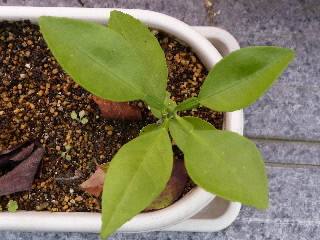
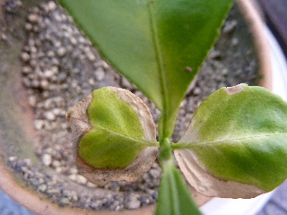
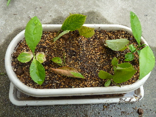
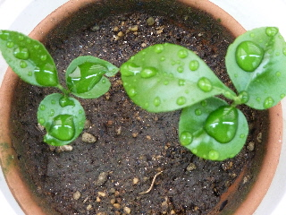
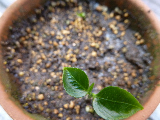
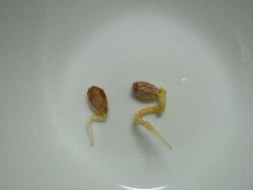

遊びで植物を育てよう
実生栽培で遊んでいます。
2013/01/20
寒いですがグレープフルーツは枯れていません。
グレープフルーツってなんとなく南国なイメージがあるんですけど、まだ枯れずにいます。

ベランダだからかもしれませんが、2本中2本ともまだ大丈夫そうです。
このまま冬を乗り切って、寒さの耐性をつけて育って欲しいです。
【ページTOP】
【グレープフルーツTOP】
【園芸TOP】
2012/08/12
グレープフルーツを植え替えました。
晴天が続いていますね。
グレープフルーツが水不足になっていました。

葉っぱが一部枯れちゃいました。
素焼きの小さい鉢では、水分が直ぐになくなってしまします。
なので、プラスチックの小さなプランターにしました。

これで水やりが少し楽になるかも。
余ったスペースにはブルベリーの挿し木をしました。時期が遅いですが、なんとか育って欲しいです。
【ページTOP】
【グレープフルーツTOP】
【園芸TOP】
2012/06/30
グレープフルーツがすくすく育っています。
今日は雨だったので、水玉付きです。

グレープフルーツは2本とも順調に育っています。
でも個体差ってあるもんですね。
【ページTOP】
【グレープフルーツTOP】
【園芸TOP】
2012/06/17
グレープフルーツの芽が出ました。
種まきしたグレープフルーツが発芽しました。

葉っぱの緑が濃いです。
写真上の小さい緑も芽です。
今のところ順調に育っています。
【ページTOP】
【グレープフルーツTOP】
【園芸TOP】
2012/06/04
ピンクグレープフルーツの中に、根が出た種がありました。
どうしようかな？
根が出てるんだからすぐに育ちそうですよね。

ホームページを色々見たんですが、グレープフルーツの実生栽培の成功例にはたどり着けませんでした。
温暖な地の植物なので、日本はちょっと辛い。育てていても、実が出来るまでの期間がとても長い。等、悪い話は多かったです。
この食べたグレープフルーツはあまり美味しくなかったので、やめようかとも思ったんですが、とりあえず植えてみました。
これから暑くなるので、枯らさないで育てる自信はないですが、とりあえずやってみます。
【ページTOP】
【グレープフルーツTOP】
【園芸TOP】
実生でもちゃんと育つかな。
【おいしいものを食べよう。】【たくさん寝よう。】
【ソロ活をしよう!】【季節感のあることをしよう。】【動画視聴はほどほどに。】【当サイトの全てのコンテンツは無断転載禁止です。】